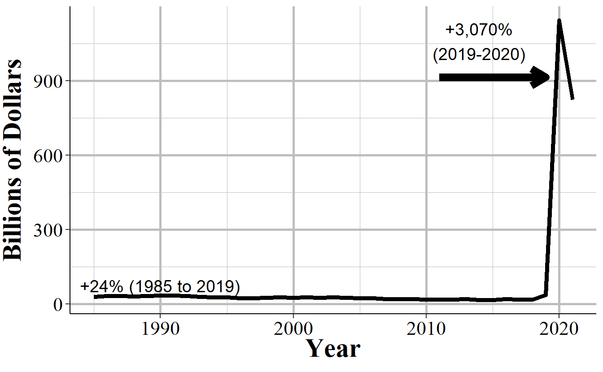
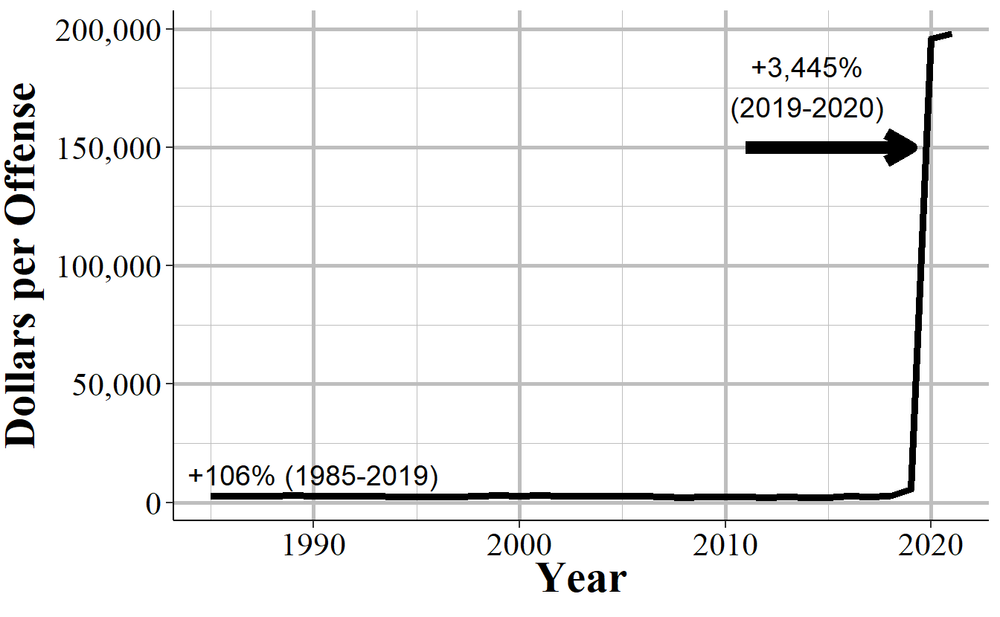

Chapter 2 Rome
#> value_number n value
#> 1 0 61 0
#> 2 2 2 4
#> 3 4 1 4
#> 4 5 1 5
#> 5 6 2 12
#> 6 8 3 24
#> 7 9 1 9
#> 8 10 3 30
#> 9 15 1 15
#> 10 19 1 19
#> 11 20 5 100
#> 12 23 1 23
#> 13 25 2 50
#> 14 28 1 28
#> 15 30 1 30
#> 16 35 1 35
#> 17 40 1 40
#> 18 43 1 43
#> 19 46 1 46
#> 20 50 7 350
#> 21 60 3 180
#> 22 67 1 67
#> 23 70 2 140
#> 24 75 1 75
#> 25 76 1 76
#> 26 80 1 80
#> 27 84 1 84
#> 28 85 1 85
#> 29 97 1 97
#> 30 98 2 196
#> 31 100 11 1,100
#> 32 101 3 303
#> 33 108 1 108
#> 34 111 1 111
#> 35 120 1 120
#> 36 126 1 126
#> 37 150 4 600
#> 38 153 1 153
#> 39 157 1 157
#> 40 162 1 162
#> 41 163 1 163
#> 42 194 1 194
#> 43 199 1 199
#> 44 200 13 2,600
#> 45 232 1 232
#> 46 247 1 247
#> 47 250 2 500
#> 48 261 1 261
#> 49 300 7 2,100
#> 50 325 1 325
#> 51 329 1 329
#> 52 350 2 700
#> 53 359 1 359
#> 54 370 2 740
#> 55 380 1 380
#> 56 400 2 800
#> 57 453 1 453
#> 58 460 1 460
#> 59 500 7 3,500
#> 60 548 1 548
#> 61 550 1 550
#> 62 590 1 590
#> 63 600 1 600
#> 64 655 1 655
#> 65 760 1 760
#> 66 800 2 1,600
#> 67 850 1 850
#> 68 900 3 2,700
#> 69 999 2 1,998
#> 70 1000 10 10,000
#> 71 1001 2 2,002
#> 72 1008 1 1,008
#> 73 1021 1 1,021
#> 74 1134 1 1,134
#> 75 1200 7 8,400
#> 76 1250 1 1,250
#> 77 1355 1 1,355
#> 78 1445 1 1,445
#> 79 1800 1 1,800
#> 80 1900 1 1,900
#> 81 2000 1 2,000
#> 82 2008 1 2,008
#> 83 2200 1 2,200
#> 84 2240 1 2,240
#> 85 2442 1 2,442
#> 86 2500 5 12,500
#> 87 2677 1 2,677
#> 88 2799 1 2,799
#> 89 2997 1 2,997
#> 90 3000 1 3,000
#> 91 3001 1 3,001
#> 92 3119 1 3,119
#> 93 3346 2 6,692
#> 94 3500 1 3,500
#> 95 4000 2 8,000
#> 96 4040 1 4,040
#> 97 4200 1 4,200
#> 98 4700 1 4,700
#> 99 4952 1 4,952
#> 100 5124 1 5,124
#> 101 6388 1 6,388
#> 102 7000 2 14,000
#> 103 7500 1 7,500
#> 104 7705 1 7,705
#> 105 8167 1 8,167
#> 106 8400 1 8,400
#> 107 10000 1 10,000
#> 108 19800 1 19,800
#> 109 20000 1 20,000
#> 110 28000 1 28,000
#> 111 35000 1 35,000
#> 112 43000 1 43,000
#> 113 77777 1 77,777
#> 114 999999 1 999,999
#> 115 7777777 10 77,777,770
#> 116 9999999 3 29,999,997
#> 117 15540565 1 15,540,565
#> 118 99999999 1 99,999,999
#> 119 100000000 1 100,000,000
#> 120 999999999 433 432,999,999,567
#> 121 NA 11 <NA>

Figure 2.1: The annual total value of property stolen per offense (adjusted to 2023 dollars), 1985-2021.

Figure 2.2: The annual average value of property stolen per offense (adjusted to 2023 dollars), 1985-2021.